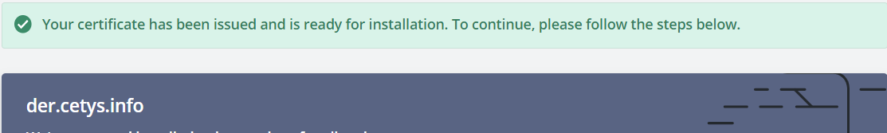
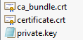
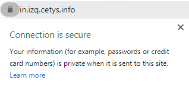
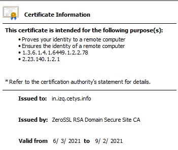

HTTPS
Para poder proporcionar un servicio https seguro se requiere de una certificación SSL, con un host o un servicio que de dichos certificados. En este caso se utilizo ZeroSSL ya que provee un servicio de SSL gratis por 90 días. Para iniciar se creo una cuenta y se tuvo que hacer una verificación de que el dominio es de nosotros (para esto ya se vinculo der.cetys.info y izq.cetys.info con las IP’s de nuestros DO’s). La verificación consiste en subir una llave en nuestro servidor HTTP con una dirección especifica para que el servicio de SSL pueda verificar que tenemos acceso a manipular la página web.
Al tener lista la verificación se puede descargar el certificado root, la llave privada y el certificado intermedio, que se tienen que cargar al servidor HTTP/HTTPS para que el usuario pueda consultar el certificado y verificar la seguridad de la página.
Para NGINX se tiene que concatenar el certificado root con el certificado intermedio, para maximizar la compatibilidad de diferentes browsers. Para hacer esto en Linux se tiene que correr el siguiente código:
cat certificate.crt ca_bundle.crt >> certificate.crt
NGINX
Para poder habilitar el servicio de HTTPS en el servicio web ya existente en NGINX se tiene que hablitira otro servidor que este escuchando al puerto de HTTPS que en este caso es 443. Así que se crea un servidor que conozca el destino del certificado root y la llave privada para que el cliente pueda consultarlo y verificar la autenticidad de la página.
server {
listen 443 ssl;
ssl on;
ssl_certificate /etc/ssl/certificate.crt;
ssl_certificate_key /etc/ssl/private.key;
server_name izq.cetys.info;
location / {
root /srv/www/;
index index.html;
}
}
Pruebas
Al ingresar a la pagina https://in.izq.cetys.info se puede ver el candado que demuestra que esta pagina efectivamente tiene un certificado y tiene una comunicación segura.
Al ingresar a la pagina https://in.izq.cetys.info se puede ver el candado que demuestra que esta pagina efectivamente tiene un certificado y tiene una comunicación segura.
